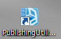

この文書ではPSMアプリを実機上で実行するため手順について説明します。
Contents
PSMアプリを実機(Vita,Androidデバイス)で実行するためには、パブリッシャライセンスが必要です。
弊社のサイト DevPortal でパブリッシャライセンスを取得してください。
※ パブリッシャライセンスの申請から承認まで数日かかる場合があります。
Vita、Androidデバイスで実行するためには鍵を作成する必要があります。
※ このドキュメントで「鍵」とは、パブリッシャ鍵、デバイスシード、アプリ鍵を意味します。
次の手順で鍵を作成します。
- PCをインターネットに接続できる状態にしておきます。
※ 社内LAN環境などでプロキシサーバーを利用している場合は、下記の「プロキシサーバーの設定」を参照して、設定を行ってください。
- PSM Studioで実行したいPSMアプリのソリューションファイルを開いた状態にします。
- 次に Androidデバイスで実行するための設定 、もしくは Vitaで実行するための設定 に進みます。
社内LAN環境などでプロキシサーバーを経由してネットワークに接続している場合、次の手順で設定を行います。
- デスクトップ上の [Publishing Utility]のアイコンをダブルクリックしてPublishing Utilityを起動してください。
図3 Publishing Utility
- [メニュー] - [ファイル] - [プロキシサーバーの設定]を選択します。ダイアログが表示されるので、環境に合わせた設定をおこなってください。

図4 プロキシサーバーの設定